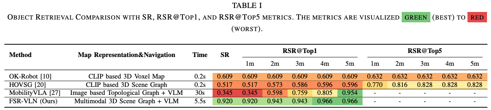
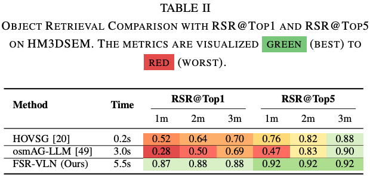
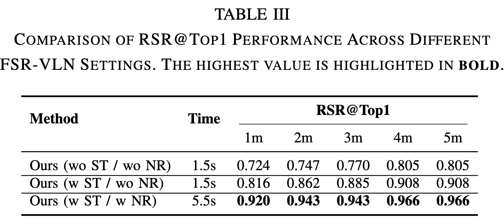

Visual-Language Navigation (VLN) is a fundamental challenge in robotic systems, with broad applications for the deployment of embodied agents in real-world environments. Despite recent advances, existing approaches are limited in long-range spatial reasoning, often exhibiting low success rates and high inference latency, particularly in long-range navigation tasks.
To address these limitations, we propose FSR-VLN, a vision-language navigation system that combines a Hierarchical Multi-modal Scene Graph (HMSG) with Fast-to-Slow Navigation Reasoning (FSR). The HMSG provides a multi-modal map representation supporting progressive retrieval, from coarse room-level localization to fine-grained goal view and object identification. Building on HMSG, FSR first performs fast matching to efficiently select candidate rooms, views, and objects, then applies VLM-driven refinement for final goal selection.
We evaluated FSR-VLN across four comprehensive indoor datasets collected by humanoid robots, utilizing 87 instructions that encompass a diverse range of object categories. FSR-VLN achieves state-of-the-art (SOTA) performance in all datasets, measured by the retrieval success rate (RSR), while reducing the response time by 82% compared to VLM-based methods on tour videos by activating slow reasoning only when fast intuition fails.
Furthermore, we integrate FSR-VLN with speech interaction, planning, and control modules on a Unitree-G1 humanoid robot, enabling natural language interaction and real-time navigation.
Methods Overview
FSR-VLN system integrates HMSG with FSR to achieve view/object-level real-world long-range navigation. Specifically, RGBD and pose data are first utilized to construct HMSG, which provides a hierarchical and multimodal feature-based representation of the environment. During online interaction, the user’s text or voice input is converted into instructions via voice activity detection and speech recognition, and the LLM infers the target object. Based on the HMSG, fast-matching and slow VLM reasoning jointly identify the optimal goal view/object.
The identified goals are subsequently used by the global path planning.
Results
Real-world Natural Language Interaction and Real-time Navigation
Long-horizon Object Navigation
Dynamic Real-time Obstacle Avoidance
Natural Language Understanding and Interaction
Qualitative Analysis
The goal view and object retrieval results of FSR-VLN for different instructions
in Room4. FSR-VLN successfully retrieves the goal view and object across four instruction types in long-range indoor
environments
Quantitative Comparison on G1 and HM3DSEM Datasets.

FSR-VLN achieves the highest SR of
92% (80/87), substantially outperforming baselines: Mobili-
tyVLA: 34.5% (30/87), OK-Robot: 60.9% (53/87), HOVSG:
51.7% (45/87). This corresponds to relative improvements
of 167%, 51%, and 77%, respectively, demonstrating the
effectiveness of our approach

In the HM3D-SEM dataset, as osmAG-LLM, we select
HOV-SG and osmAG-LLM as our baseline because they
share fundamental design principles with our approach.
The Top-1 retrieval success rate
of osmAG-LLM is significantly lower than that of HOVSG.
The main reason is that osmAG-LLM loses the hierarchically
rich visual open-vocabulary feature representation present
in HOVSG and instead relies solely on textual recognition
results. Although the osmAG-LLM semantic map is also
hierarchical, it only preserves XML-level textual information
without retaining visual CLIP features. In contrast, our
method not only preserves CLIP-based visual embeddings
but also further interacts with the original image information
through VLM, leading to a notable improvement in retrieval
success.
Ablations Analysis.

Without Navigation Reasoning
(NR) and Spatial Target (ST) instructions guide long-
range navigation is guided by restricting object search to the
target room, reducing global matching errors, and improving
RSR. In long-range environments, this room-level guidance
is particularly critical; when combined with the hierarchical
scene graph, the search is further confined to the designated
room, enhancing navigation success. With NR, extended
VLM reasoning allows FSR to verify the correctness of
fast matching, and VLM-based selection refinement further
increases RSR, demonstrating the effectiveness of the ap-
proach.
BibTeX
@misc{zhou2025fsrvlnfastslowreasoning,
title={FSR-VLN: Fast and Slow Reasoning for Vision-Language Navigation with Hierarchical Multi-modal Scene Graph},
author={Xiaolin Zhou and Tingyang Xiao and Liu Liu and Yucheng Wang and Maiyue Chen and Xinrui Meng and Xinjie Wang and Wei Feng and Wei Sui and Zhizhong Su},
year={2025},
eprint={2509.13733},
archivePrefix={arXiv},
primaryClass={cs.RO},
url={https://arxiv.org/abs/2509.13733},
}